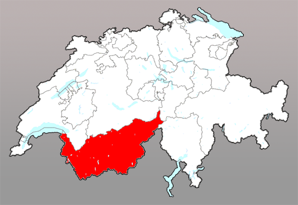

Het Kanton Wallis of Valais ligt aan de zuid-west kant van Zwitserland, midden in Europa.
Wallis is goed bereikbaar per auto en trein via het Rhonedal, maar ook met het vliegtuig. Er zijn dagelijkse vluchten naar Geneve aan het meer van Geneve. Er is ook een klein vliegveld in Sion, de hoofdstad van Wallis. Een alternatief is het vliegveld in Basel, of dat van Aosta in Italie.
| Wanneer | Van | Naar | Tijd | Maatschappij |
|---|---|---|---|---|
| Dagelijks | Paris (CDG) | Geneva (GVA) | 16:25 | Air France |
| Dagelijks | Amsterdam (AMS) | Geneva (GVA) | 20:50 | KLM |
| Dagelijks | Paris (LBG) | Geneva (GVA) | 21:45 | ASL Airlines |
| Dagelijks | Brussels (BRU) | Geneva (GVA) | 14:40 | Brussels Airlines |
| Dagelijks | Dusseldorf (DUS) | Geneva (GVA) | 08:35 | Eurowings |
| Dagelijks | Frankfurt (FRA) | Geneva (GVA) | 17:55 | Lufthansa |
| Dagelijks | Amsterdam (AMS) | Geneva (GVA) | 15:10 | easyJet |
| Dagelijks | Paris (LBG) | Geneva (GVA) | 17:00 | Flexflight |
| Dagelijks | Brussels (BRU) | Geneva (GVA) | 11:20 | Brussels Airlines |
| Dagelijks | Frankfurt (FRA) | Geneva (GVA) | 10:45 | Swiss |
| Dagelijks | Paris (ORY) | Geneva (GVA) | 16:25 | easyJet |